This function is kept for backward compatiblity; you should either use
This function is kept for backward compatiblity; you should either use
label_number() or label_number_si() instead.
unit_format( accuracy = NULL, scale = 1, prefix = "", unit = "m", sep = " ", suffix = paste0(sep, unit), big.mark = " ", decimal.mark = ".", trim = TRUE, ... )
Arguments
| accuracy | A number to round to. Use (e.g.) Applied to rescaled data. |
|---|---|
| scale | A scaling factor: |
| prefix | Symbols to display before and after value. |
| unit | The units to append. |
| sep | The separator between the number and the unit label. |
| suffix | Symbols to display before and after value. |
| big.mark | Character used between every 3 digits to separate thousands. |
| decimal.mark | The character to be used to indicate the numeric decimal point. |
| trim | Logical, if |
| ... | Other arguments passed on to |
Examples
#> scale_x_continuous(labels = unit_format(unit = "m"))# Labels in kg, but original data in g km <- unit_format(unit = "km", scale = 1e-3, digits = 2) demo_continuous(c(0, 2500), labels = km)#> scale_x_continuous(labels = km)